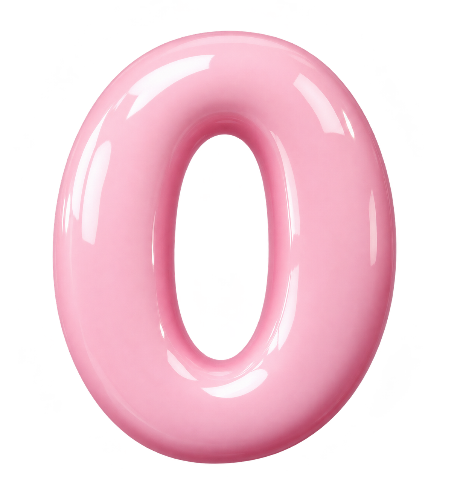

Your learning playground
1 foundation + 24 principlesPick a principle.
Start at the foundation, or follow your curiosity.

FoundationObjectives & powersThe supervisorInformation sharingLicensingSuitability of peopleControl & transfersCorporate governanceRisk & internal controlsReview & reportingMeasures & sanctionsExit & resolutionReinsurance & risk transferValuationInvestmentsEnterprise risk managementCapital adequacyIntermediariesConduct of businessPublic disclosureCountering fraudAnti-money launderingGroup-wide supervisionMacroprudential supervisionCooperation & coordinationFoundation is our introductory module. ICP 11 was merged into ICP 10, so the numbering jumps from 10 to 12. Names are shortened here for easy browsing. View the IAIS framework ↗